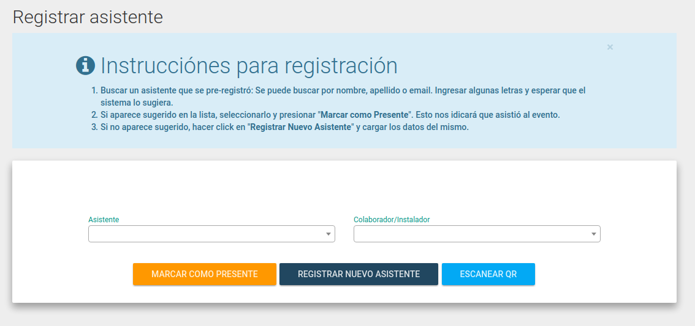
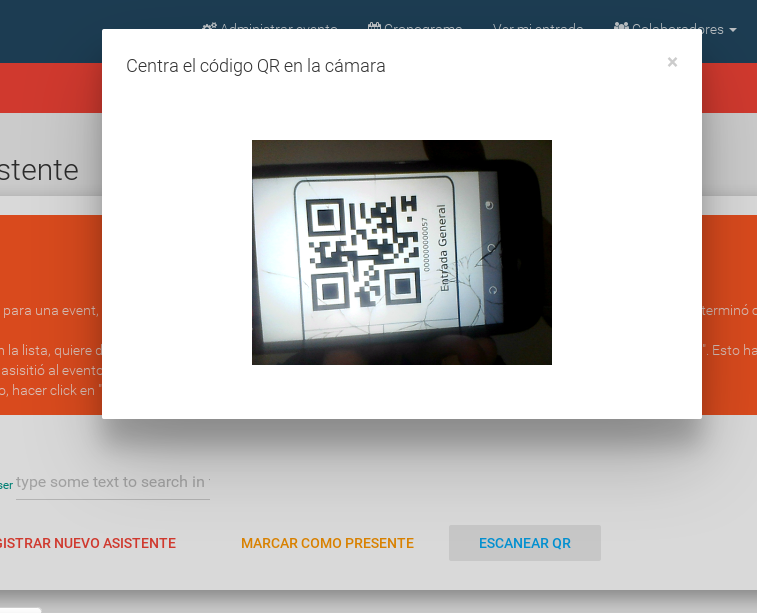

Administrar Asistencia
El día del evento, lo ideal es registrar a todos los asistentes, ya sea confirmando su asistencia o registrando a la persona en el ingreso al evento.
Con esto posteriormente, la plataforma muestra estadísticas de cada sede y es más fácil saber cuánta gente concurrió al evento.
Las personas que pueden administrar la asistencia, deben haber iniciado sesión como Colaborador u Organizador y además tener permisos de administración de asistencia.
- En la página princiapl del evento, ir al menú "Colaboradores" -> "Admnistrar asistencia"

En la pantalla se presentan varias opciones. Los pasos recomendados son:
- Buscar un asistente que se pre-registró: Se puede buscar por nombre, apellido o email. Ingresar algunas letras y esperar que el sistema lo sugiera.
- Si aparece sugerido en la lista, seleccionarlo y presionar "Marcar como Presente". Esto idicará que asistió al evento.
-
Si no aparece sugerido, hacer click en "Registrar Nuevo Asistente" y cargar los datos del mismo.
-
Las personas se pueden haber registrado como Asistentes, Colaboradores, Organizadores o Instaladores. Los asistentes se buscan en el campo "Asistentes" y los últimos 3 en el campo "Colaborador/Instalador".
Escanear QR
Si el asistente trajo su entrada impresa (que se le envió por mail en el momento que se registró), está la opción de escanear el código QR de la misma utilizando la cámara. Para esto, hacer click en el botón "Escanear QR" y seguir las instrucciones.

Automáticamente se detecta el código y se confirma la asistencia, mostrando también la confirmación en la pantalla.